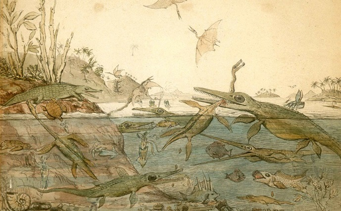
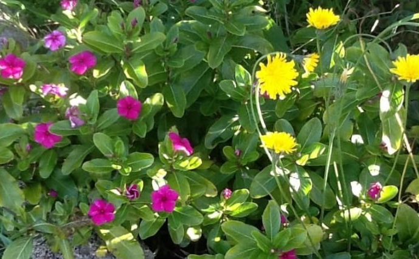
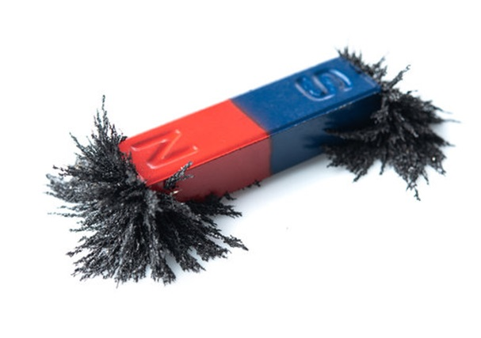

Centipede's Pedicure
[fig] A task which is simultaneously too exacting or delicate to be performed without close attention, but too tedious or monotonous to easily stay suitably invested in while attempting to complete it.
root Allusion to the many-legged arthropod
centipede +
pedicure, a cosmetic treatment of the feet. Refers to how difficult, repetitious, yet unengaging, such a task would literally be.
IPA ˈsɛntɪpiːdz ˈpɛdɪkjʊə
daly
[n] An incredibly dire predicament, one with severe and immediate consequences, caused by human error and that cannot ever be mitigated or reversed - but specifically one so immediate, sudden, and having occurred as the result of so minor an action that as little as just one minute’s foresight would have been sufficient to avoid it entirely.
[a] Such a situation is
dalic.
root From Noongar
dalyaniny, variably meaning “go” [v] or “gone” [a].
IPA ˈdælleɪ
dricence
[n] Abbreviation: drivers’ licence, driving licence.
root Portmanteau of
drivers +
licence.
IPA draɪsɛnts
Durnovaria
[n] The fictitious, anachronistic, worldwide ur-biome which is often, incorrectly, portrayed as the sole habitat of dinosaurs and early megafauna. Frequently found in prehistoric-themed pulpy B-movies and children’s media; typically characterised by the presence of dense jungle-like foliage (especially replete with oversized ferns and cycads), dusky red skies, copious volcanoes and thermal vents, dense fog, and the coexistence of any and all prehistoric life in the same geographic and temporal location.
[a] Durnovarian, of the associated aesthetic.
root From
Duria, the original ancient Roman name for the modern-day town of Dorchester in Dorset, England. Allusion to the setting of the earliest known example of such an artistic illustration of the Mesozoic Era,
Duria Antiquior: A More Ancient Dorset, a 1830 watercolour painting by Henri De la Beche based on the marine fossils discovered in the area by early palaeontologist Mary Anning.
IPA ˈdɜːnəʊˈˈverəriə

Duria Antiquior: A More Ancient Dorset, the first Durnovarian artwork.
enappellment
[n] The point within a work of art, particularly literary or cinematic fiction, at which the title of the work itself is expressly mentioned or invoked.
root From historic French
apelación, meaning “name, designation”.
IPA ɛnˈæpᵊlmɛnt
eppecritical
[a] Of a critical remark from a second party: hypocritical, but not incorrect or unwarranted. Also, decidedly not sanctimonious or condescending; given from a position of experienced caution.
[n] Noun-form:
eppecrisy. Someone who makes such remarks is an
eppecrit.
root From Anglicised Greek
epípedo, meaning “level, stage”, +
-critical in pattern of
hypocritical.
IPA ep.ɪˌˈkrɪtɪkᵊl
excasm
[n] Entirely truthful words delivered with a pseudo-sarcastic affect, so as to intentionally deceive or mislead an interlocutor without technically uttering a falsehood.
[a] A truthful statement the speaker intends to not have taken seriously is
excastic.
root From Greek prefix
ex-, meaning “(prepositionally) out, beyond”.
IPA ɛkskæzm
fidistine
[n] An adherent of any spiritual doctrine or religion with inherent mythological, cosmological, or supernatural elements who – in spite of their own rational, conscious, atheistic or agnostic rejection of those aspects of their religion – believes that an adherence to the teachings and practices of that religion provides enough of a measurable personal or social good to themselves or the world at large, that it is both beneficial to practice and prudent to advocate others also practice.
root
From Liturgical Latin
fidem +
sine, making an ambiguous play on either “without faith” or “faith without”, + the suffix
-tine, “of”.
IPA fɪdɪstaɪn
flanz
[n] Any wild plant growing in a garden space of its own volition, but which unlike a weed, is not considered undesirable.
[v] To flanz, to intentionally allow such naturally occurring plants to grow unimpeded alongside one's cultivated flowers.
root From
pflanzter, medieval Saxon term for someone who harvests wild foilage.
IPA flænz

Flanz dandelions growing among cultivated periwinkles.
geziatone
[n] The uniquely unpleasant background noise made by unwelcome and out-of-sight pests, such as the sound of unseen rats or mice scurrying and gnawing at roughage in walls or under floorboards.
root From German
ungeziefer, “vermin, pest”.
IPA ɡiːsiːɑːtəʊn
helioçance
[n] A niche, abstract, quality possessed by certain songs and musical pieces – most notably Richard Wagner’s 1856 'Walkürenritt' ('Ride of the Valkyries') leitmotif, or Creedence Clearwater Revival’s 'Fortunate Son' – which describes a work's specific association with helicopters and the portrayal of them in the public imagination and popular-culture.
root helio from
helicopter, originally French
hélicoptère + -
çon, French, from
chançon “song”.
IPA hiːliəʊ ʃɑ̃ːns
Hemel Claus
[n] Novel codification of the familiar modern secular, Americanised, Santa Claus (Father Christmas) image – largely the same, but donning a rich blue fur-lined santa suit, rather than the typical deep red.
root From Dutch
hemel, meaning "sky (blue)", +
Santa Claus.
IPA hɛmɛl klɔːz
Man dressed as Hemel Claus.
iberic
[a] The property of some words, names, or terms to appear to etymologically self-explanatory, but where in actuality, the similarity between their term of reference and their description is merely coincidental. One notable example is ‘Kosher salt’, which is not named as such because it is itself Kosher (although, as just rough-hewn sea salt, it is incidentally Kosher), but rather, because it is used as part of the process of making other foodstuffs (primarily, freshly-butchered meat) Kosher.
root From Anglicised Yiddish
iberik (
יבעריק), meaning “redundant”.
IPA aɪˈbɪrɪk
katacasm
[n] Words, which despite being entirely true and intended to be received by an interlocutor without any ironic remove, are mistaken for sarcasm. Could be caused by a simple verbal failure to communicate clearly because of a flat affect or inflection of delivery, or because of the perceived improbability of a given statement’s veracity.
[a] A truthful statement unintentionally mistaken for sarcasm is
katacastic.
root From Greek prefix
kata-, meaning “(prepositionally) counter, against”.
IPA ˌkætəkæzm
kutikrav
[n] An large collection of a specific kind of item, that through no active effort of your own, you’ve ended up in possession or ownership of. The possible outcome of persistent gift-receiving or the result of inheritance.
root From Anglicised Croatian
kutija kravata, literally meaning “(a) box of neckties”.
IPA kuːtaɪˌkrɑːv
mesorm
[v] To performatively and exaggeratedly look entirely away from a keyboard, numberpad, or similar device where another person is entering a password, PIN, or other sensitive information as a social nicety which ostensibly defends the dignity of the other individual’s privacy.
root From Japanese
sorasu (“avert”) +
me ("one’s eyes") and morpheme
minkan (“private”).
IPA miːsɔːm
momtoo
[n] A tattoo which specifically serves a functional purpose beyond aesthetics, such as denoting an individual’s medical information or living will.
root From Māori
momo +
toto, meaning “blood type”, in the pattern of
tattoo.
IPA mɒmtuː
morphineme
[n] An invented word or brand name used to delineate a medicinal or pharmacological product being sold or demonstrated publicly from competitors’ products or unbranded generic variants.
root Play on
morphine, a medicinal analgesic, +
morpheme, the etymological basis of a word.
IPA ˈmɔːfiːniːm
oroban
[n] A dream so convincingly realistic and grounded in banal possibility that it might be momentarily difficult to distinguish from a memory of reality upon initially waking.
[a] Such a dream is
orobanal.
root Play on an allusion to
Orobas, a largely-benign equine oracular figure in the Goetic tradition, +
banal, meaning commonplace or boring.
IPA ɔːrəʊbæn
qambing
[v] The process of deceptively creating or providing false credentials or qualifications as part of an attempt to apply for a privileged vocational position in a role one is entirely capable of performing, but not legally permitted to hold, such as practicing law, medicine or pedagogy.
root From Zulu
qamba, meaning “forge, justify [v]".
IPA kʌmbɪŋ
ryugy
[a] The state (of a work-in-progress or entirely abandoned project) of currently being sixty-two percent completed. Or, more generally, the state of a project of being more-than-half finished, but distinctly less than two-thirds completed and far from fully-functional.
root From Latinised Korean
Ryugyong (Hangul,
류경호텔), literally meaning “capital [city] of willow [trees]”, but which specifically alludes to the Ryugyong Hotel in Pyongyang, North Korea – an ambitious, but twice-abandoned, effort to build the world’s largest hotel that sporadic development reportedly left no more than sixty-two percent completed and non-operational.
IPA riːɡuːʤiː
scritto
[n] A piece of paper, notepad, or similar writing surface covered in an excessive – and typically overlapping, disordered, and hurried – amount of handwritten notes, particularly those written as a record of a torrent of impromptu ideas.
[a] Also,
scritty, as an adjective: the aesthetic (intentionally manufactured or otherwise) of the same.
root From contemporary Italian,
scritta [fem.] or
scritto [masc.], meaning “(hand-)written”.
IPA sˈkrɪtəʊ
smerth
[n] A feeling of gratitude felt internally at the death of another person. Not necessarily derived out of a personal animosity of that individual, but perhaps out of merely an otherwise dispassionate acceptance that the death is beneficial to yourself.
root From Latinised Russian
smert' (Cyrillic
смерть), meaning “death” (transitive).
IPA smɜːθ
Thasian Defeat
[fig] A military or strategic loss which eventuates a more beneficial outcome for the defeated side than a victory would have. Contrast with a “Pyrrhic Victory”, a success so costly it is ultimately ruinous.
root Historical allusion to the Thasian Rebellion, wherein the unimportant Greek backwater island of Thasos unsuccessfully rebelled against Athenian hegemony and was consequentially annexed. The subsequent infrastructural changes administered by the post-annexation vassal-tyrant government enabled Thasos to remain a significant regional force for hundreds of years, even after power on the Mediterranean mainland moved away from Athens and to Rome.
IPA feɪzˈiːən dɪˈfiːt
tshutong
[n] An accumulation of minute iron-filings, rust particles, metal swarf, and other particulate ferric debris held together with a magnetic charge. Often seen after passing a magnet over the unswept floor of a metal-fabricating workshop space, or even just the outdoor ground of any area remotely adjacent to heavy industry.
root Play on phonetic Latinised Mandarin Chinese (Hanyu Pinyin)
shōucáng (收藏) “collection, collectivist” +
tiě (铁) “iron”; allusion to the Mao-era practice of collectivised pig-iron creation during the Great Leap Forward
IPA ʃuː tɒŋ

Two iron-filing tshutongs formed around the poles of a bar magnet.
vistush
[v] Non-gerund verb form: to phonetically sing along to the lyrics of a song performed in a language one does not actually know, typically speak, or understand.
[v] Gerund verb form: the act of doing this is
vistushing.
root From contemporary Icelandic
virtúó, meaning “virtuoso” (descriptive).
IPA ˈvɪʃtuːɪŋ
yem̄ing
[v] Saying something you know to be verifiably true, but which sounds highly unintuitive or is commonly (and wrongly) held to be incorrect, with the express intention of provoking someone else into mistakenly attempting to correct you, so that you can in turn, readily correct them.
root From Latinised contemporary Turkish
yem̄, meaning “bait”.
IPA jæmɪŋ
ȥusallise
[v] To carry a conversation nonverbally by replying to questions and prompts from a secondary party solely through playing apropos, or fittingly-referential, sections of songs or other musical gags on an instrument, typically to comedic effect.
[v] Performance of the act itself is
ȥusallising (gerund verb-form).
[n] Such a communication between two (or more) parties is a
ȥusallisation.
root From High German
hinzufügen, referentially meaning “add” [v] or “count (a mass-noun, ie: the regularity of sounds on a beat) + etymological nod to composer John Phillip Sousa, who reportedly engaged in the practice with his musical students.
IPA sjuːsɪleɪz
last major update: September 2024